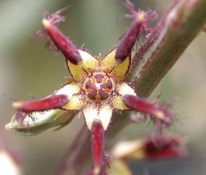
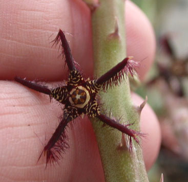
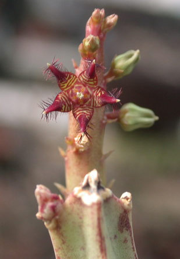

|
ECONOMICALLY
IMPORTANT PLANTS OF INDIA |
| Under-utilized Food and Fodder species and their wild relatives | Contributed by Ms.M.L Annapurna And Dr. Dhanapal, UAS, Bangalore |
Caralliuma adscandens

Taxonomic
Details
----- Correct Name
----- Classification
----- Synonyms
----- Common Names
Other Biological Details
----- Habit and Habitat
----- Diagnostic Features
----- Reproductive Biology
---------- Breeding System
---------- Phenology
---------- Pollinators
---------- Seed Biology
----------Seed Germination
----- Major Pests and Diseases
Economic Potential and Uses
----- Parts Used
-----Uses
----- Harvesting Practices
----- Produce and Products
----- Chemistry
----- Processing Techniques
----- Other uses
----- Economic Potential to the
Country
----- Export Potential
Miscellaneous Information
Literature
Correct
Name :Caralluma
adscandens

Family : Asclepiadaceae
Synonyms :
Common Names :
Tamil: cull mulayan
Misc:Makadsing,vanjarata
bhijii
HABIT & HABITAT

Met with in arid palces in the
Dekkan peninsula.
Availability :
Burma,Srilanka
India:Madhya
Pradesh,Kerala,Tamil Nadu
Status :
REPRODUCTIVE
BIOLOGY
Breeding
System :
Phenology :
Pollinators:
Seed Biology :
Seed Germination :
MAJOR
PESTS & DISEASES
Pests:
Diseases:
Uses
This fleshy plant is often eaten by the Natives in the form of pickles,or is
made into chutney.
Harvesting
Practices
Produce and Products
1.Eugenia
formosa- A Dictionary of the Economic products of India, 1889, George Watt,
Vol.I, pp.141.